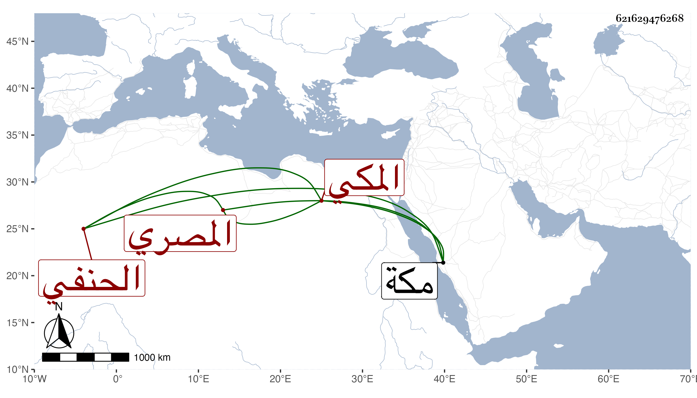

0902Sakhawi.DawLamic.ITO20230111-ara1.EIS1600.621629476268
Biography ID: 621629476268
66
محمد القطب أبو الخير المصري الأصل المكي الحنفي أخو أحمد واللذين قبله وشقيق ثانيهما ويعرف بابن الفاكهاني . ولد في تاسع عشر جمادى الثانية سنة ست عشرة بمكة ونشأ بها فحفظ القرآن وجوده على الشيخ محمد الكيلاني وبعضه علي الزين بن عياش وأربعي النووي والمجمع وعرضه بتمامه في مجلسين على خاله الجلال عبد الواحد وأما كن منه على جماعة وبعض مختصر الأخسيكتي وأخذ عن خاله في تفسير القرآن من أثناء آل عمران لعله إلى العنكبوت وسمع فيه بقراءة خاله على البساطي ثم سمعه على خاله الآخر الجمال محمد وعبد الرحمن أبي شعرة وأخذ الفقه عن خاليه وبالقاهرة عن ابن الديري وابن الهمام وعبد السلام البغدادي والشمس بن الجندي وقرأ عليه طائفة كبيرة من شرحه على المجمع وسمع على ابن الديري مجالس من التفسير والنحو عن خاله عبد الواحد وأبي القسم النويري وإمام الدين الشيرازي وابن الجندي وأصول الفقه عن ابن الهمام قرأ عليه تحريره وخاله عبد الواحد سمع عليه وكتب عنه في أماليه وغيرها وكان أحد طلبة الجمالية .
